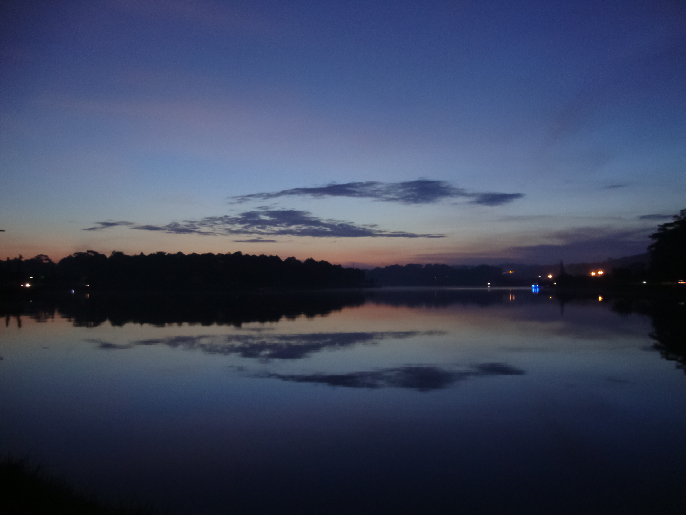
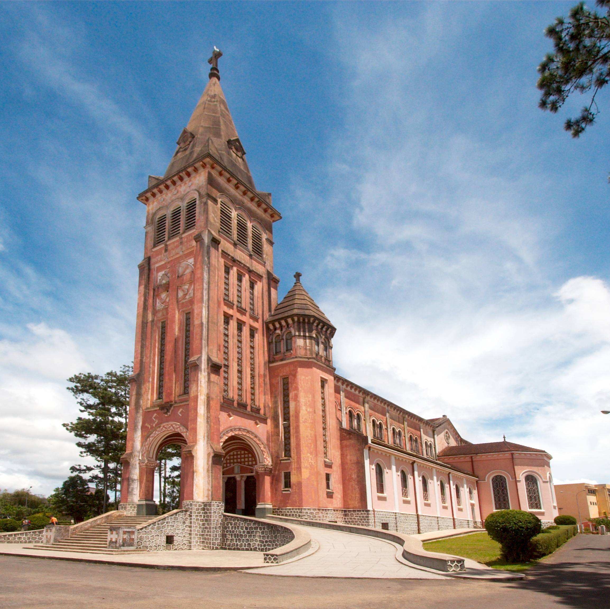
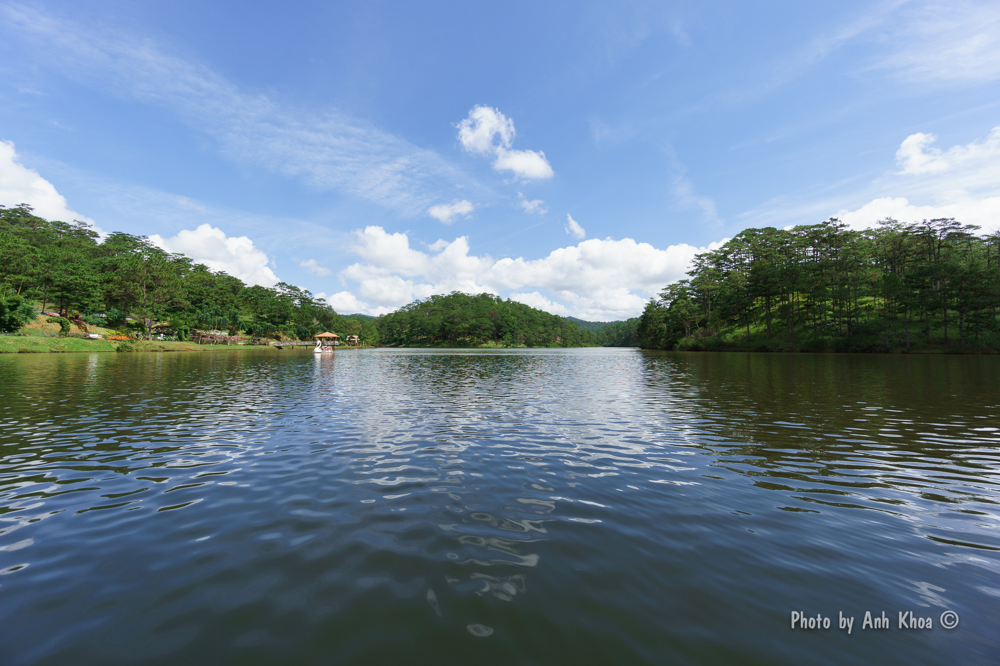
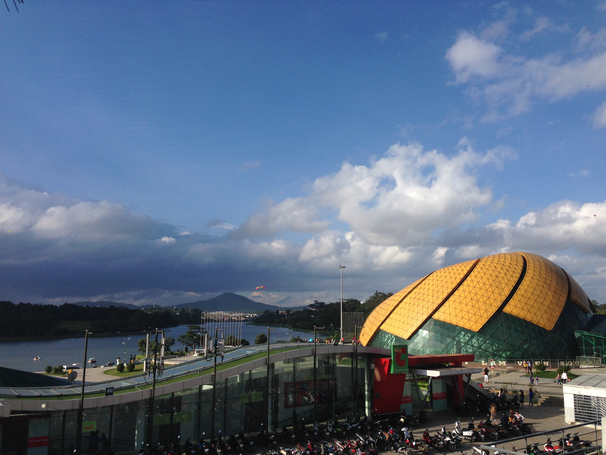

Săn mây
Dậy sớm lên đồi chè Cầu Đất hoặc đỉnh Langbiang để đón bình minh giữa biển mây bồng bềnh.
Sổ tay du lịch thành phố ngàn hoa
Nơi những đồi thông xanh mướt, sương sớm bảng lảng và muôn sắc hoa hòa quyện, tạo nên một Đà Lạt dịu dàng mà ai đến cũng muốn quay lại.
Khám phá Đà LạtĐà Lạt là thành phố cao nguyên thuộc tỉnh Lâm Đồng, nổi tiếng với khí hậu mát mẻ quanh năm, những rừng thông bạt ngàn và kiến trúc Pháp cổ kính còn lưu giữ đến hôm nay.
Trang này dành cho những ai yêu thích xê dịch, muốn tìm một nơi để chậm lại, hít thở không khí trong lành và ngắm nhìn thành phố sương mù từ những góc nhìn thân thương nhất.
Mỗi con dốc, mỗi đồi thông ở Đà Lạt đều mang một câu chuyện riêng, chờ những đôi chân lữ khách ghé qua để lắng nghe.
Đà Lạt không vội vàng, chỉ có sương giăng và những buổi sớm mai bình yên.
Dậy sớm lên đồi chè Cầu Đất hoặc đỉnh Langbiang để đón bình minh giữa biển mây bồng bềnh.
Đi bộ hoặc đạp xe quanh hồ, ghé Thủy Tạ nhâm nhi ly cà phê nóng giữa sương chiều.
Thưởng thức bánh tráng nướng, sữa đậu nành và không khí nhộn nhịp về đêm.





Hồ Xuân Hương, Nhà thờ Con Gà, chợ Đà Lạt, quảng trường Lâm Viên và thưởng thức ẩm thực chợ đêm.